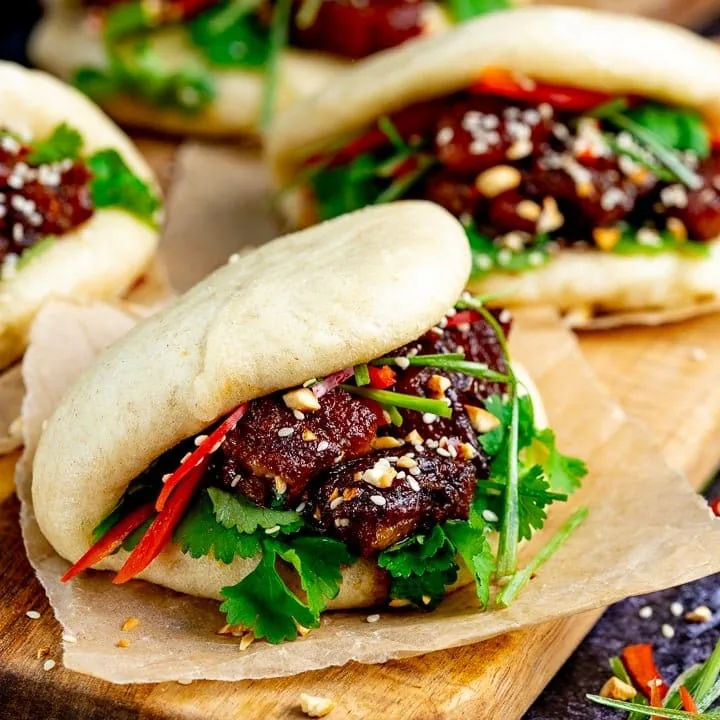

Instructions
Tap a step when done1. Start by making the bao buns: place the flour, sugar, salt, and instant dried yeast in a bowl and mix together.
2. Add the milk, warm water, and softened butter to a jug and stir together until melted. Stir the liquid mixture into the flour mixture with a spoon and then by hand. Turn out onto a floured surface and knead for 10 minutes (or use a stand mixer fitted with a dough hook).
3. Place the dough in an oiled bowl, cover with clingfilm or a damp towel, and leave to prove until doubled in size (about 90 minutes to 2 hours).
4. Meanwhile, place all the slow-cooked pork belly ingredients (not the glaze) into a cast-iron casserole pan. Bring to a boil, cover with a lid, turn down the heat, and simmer for 2 hours. Turn off the heat and drain the pork (reserve the flavorful stock for noodle soup if desired).
5. Tip the proved dough onto a floured surface, knead briefly, and divide into balls. Roll each ball into an oval on baking parchment (approx. 12cm x 8cm).
6. Brush the ovals lightly with olive oil and fold each oval over a chopstick in the middle to leave a little space in the fold, then slide out the chopstick.
7. Transfer the folded buns (still on their parchment squares) onto baking trays, cover loosely, and prove for 1 more hour until puffed up.
8. Bring a large steamer pan to a boil. Steam the buns in batches on their parchment squares for 15 minutes until pillowy and cooked through.
9. Chop the braised pork belly into bite-sized chunks and whisk together the glaze ingredients in a small bowl.
10. Heat vegetable oil in a frying pan over high heat. Fry the pork with a pinch of salt and pepper until golden, then pour in the glaze and cook for 6–7 minutes until dark, glossy, and sticky.
11. Open the warm steamed buns and stuff generously with sticky pork belly, fresh torn cilantro, sliced red chillies, spring onion strips, sesame seeds, and chopped toasted cashews.